<nav class="menu-lateral">
    <div class="menu-itens">
            <a routerLink="/app/home" routerLinkActive="active" [routerLinkActiveOptions]="{ exact: true }" >
                <div class="icon"></div>
            </a>
        
        
            <a routerLink="/app/extrato" routerLinkActive="active">
                <div class="icon"></div>
               
            </a>
       
            <a routerLink="/app/perfil"  routerLinkActive="active" >
                <div class="icon"></div>
              
            </a>
    </div>
 
    <div >
        <a></a>
    </div>
</nav>